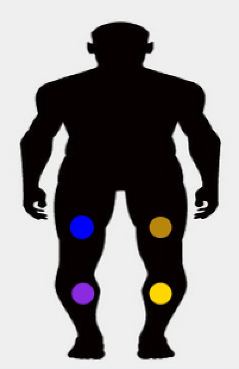

<ion-header>
  <ion-navbar>
    <button ion-button menuToggle>
      <ion-icon name="menu"></ion-icon>
    </button>
    <ion-title id="pagetitle" style="text-align: center;" class="center">
      活动
    </ion-title>
  </ion-navbar>
</ion-header>
<ion-content padding id="page4">
 <!--   -->
 <!-- Segment buttons with icons -->
 	<div padding>
	  <ion-segment [(ngModel)]="tags" (ionChange)="node_change($event)">
	    <ion-segment-button value="diagnosis" (ionSelect)="select_diagnosis($event)">
	      <ion-icon name="diagnosis"></ion-icon>
	    </ion-segment-button>

	    <ion-segment-button value="activity" (ionSelect)="select_activity($event)">
	      <ion-icon name="activity"></ion-icon>
	    </ion-segment-button>

	    <ion-segment-button value="history" (ionSelect)="select_history($event)">
	      <ion-icon name="history"></ion-icon>
	    </ion-segment-button>
	  </ion-segment>
	</div>

	
	<div [ngSwitch]="tags">
	  <ion-searchbar (ionInput)="search($event)" *ngSwitchCase="'diagnosis'"></ion-searchbar>
	  <ion-list *ngSwitchCase="'diagnosis'">
	    <ion-item class="list-item">
	      <h5>6月15日 17:15</h5>
	      <h6 class="discript">运动功能障碍：物理治疗师进行运动治疗、下肢运动...</h6>
	    </ion-item>
	    <ion-item class="list-item">
	      <h5>6月8日 16:55</h5>
	      <h6 class="discript">自我照顾障碍：作业治疗师进行上肢运动控制训练、...</h6>
	    </ion-item>
	    <ion-item class="list-item">
	      <h5>6月4日 15:34</h5>
	      <h6 class="discript">左侧偏身忽略：作业治疗师可作感知测验和训练，经...</h6>
	    </ion-item>
	  </ion-list>

	  <ion-list *ngSwitchCase="'activity'">
	    <ion-item>
	      <h2>Luna</h2>
	    </ion-item>
	  </ion-list>

	   <ion-list *ngSwitchCase="'history'">
	    <ion-item>
	      <h2>Luna</h2>
	    </ion-item>
	  </ion-list>
	</div>

</ion-content>